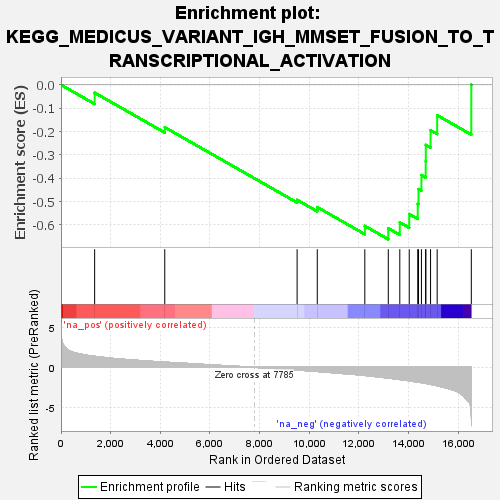

| | | Dataset | all_genes |
| Phenotype | NoPhenotypeAvailable |
| Upregulated in class | na_neg |
| GeneSet | KEGG_MEDICUS_VARIANT_IGH_MMSET_FUSION_TO_TRANSCRIPTIONAL_ACTIVATION |
| Enrichment Score (ES) | -0.6618795 |
| Normalized Enrichment Score (NES) | -1.7205327 |
| Nominal p-value | 0.004054054 |
| FDR q-value | 0.107363336 |
| FWER p-Value | 0.556 |
Table: GSEA Results Summary

Fig 1: Enrichment plot: KEGG_MEDICUS_VARIANT_IGH_MMSET_FUSION_TO_TRANSCRIPTIONAL_ACTIVATION
Profile of the Running ES Score & Positions of GeneSet Members on the Rank Ordered List
| SYMBOL | RANK IN GENE LIST | RANK METRIC SCORE | RUNNING ES | CORE ENRICHMENT | | 1 | H3-3A | 1355 | 1.380 | -0.0338 | No |
| 2 | NSD2 | 4179 | 0.647 | -0.1821 | No |
| 3 | H3-3B | 9510 | -0.330 | -0.4932 | No |
| 4 | CCND2 | 10322 | -0.515 | -0.5243 | No |
| 5 | H3C4 | 12237 | -1.014 | -0.6047 | No |
| 6 | H3C6 | 13182 | -1.345 | -0.6149 | Yes |
| 7 | H3C12 | 13646 | -1.524 | -0.5896 | Yes |
| 8 | H3C3 | 14026 | -1.683 | -0.5537 | Yes |
| 9 | H3C7 | 14369 | -1.845 | -0.5100 | Yes |
| 10 | H3C1 | 14400 | -1.861 | -0.4467 | Yes |
| 11 | H3C14 | 14517 | -1.912 | -0.3869 | Yes |
| 12 | H3C10 | 14689 | -2.001 | -0.3273 | Yes |
| 13 | H3C11 | 14693 | -2.002 | -0.2575 | Yes |
| 14 | H3C2 | 14885 | -2.125 | -0.1948 | Yes |
| 15 | H3C13 | 15151 | -2.304 | -0.1303 | Yes |
| 16 | H3C8 | 16526 | -6.120 | 0.0004 | Yes |
Table: GSEA details [plain text format]
Fig 2: KEGG_MEDICUS_VARIANT_IGH_MMSET_FUSION_TO_TRANSCRIPTIONAL_ACTIVATION: Random ES distribution
Gene set null distribution of ES for KEGG_MEDICUS_VARIANT_IGH_MMSET_FUSION_TO_TRANSCRIPTIONAL_ACTIVATION